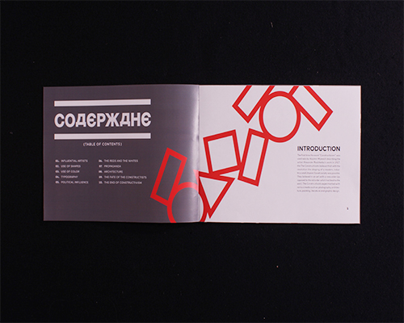

10 Things you need to know about... Constructivism. The goal of this project was to design an informational booklet/brochure about any topic of choice. I decided to explore the fundemental elements that built up the Russian Constructivist movement and the causes of the abrubt end of such an influenctial movement. For imagery I used simple geometric form line, and layering of photographs visuals that the Constructivist style was known for.
